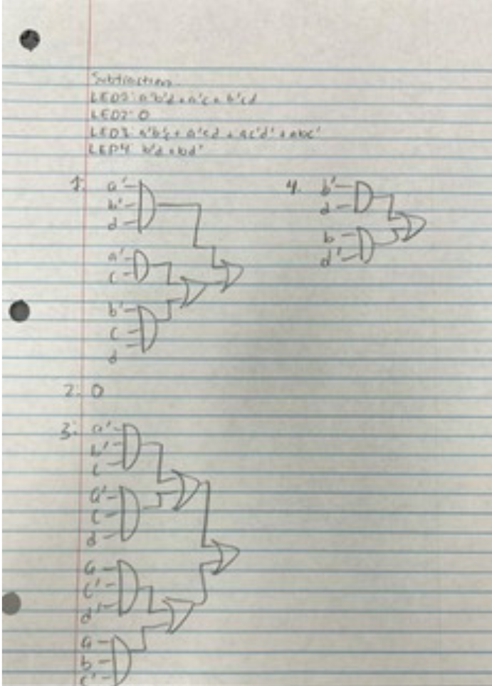
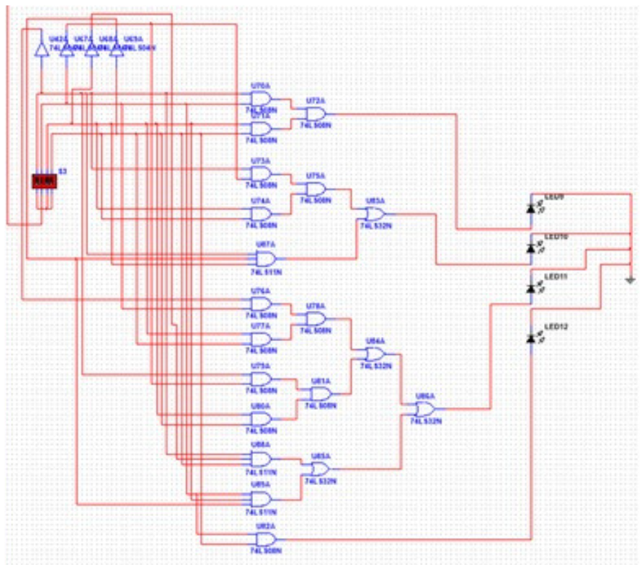

What?
- Design a Four Function 2-bit calculator using 4 LEDs to represent the output.
- Create a functional Input and Output situations which is easily interpretable.

How?
- Designed first on paper using 2 & 3 Input AND gates and 2 input OR gates.
- Using Multisim to finalize the design before replicating on a breadboard

Results
- 100% accurate Four Function 2-bit calculator, which operates using dipswitches as the input numbers and LEDs as the output number.